01The problem
Every sensor sees the world differently.
RAW sensor data keeps what an image signal processor throws away: deeper bit depth, a linear physical signal, and none of the ISP's nonlinear distortions. But exposure, spectral sensitivity and bit depth vary so much across devices that the domain gap between RAW datasets is far larger than between sRGB ones.
A detector trained on one camera's RAW stumbles on another's. RAWild is built so that a single network can train jointly across heterogeneous sensors — and hold up on all of them.
-
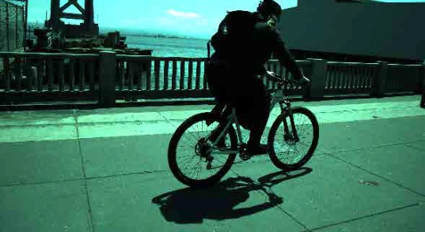
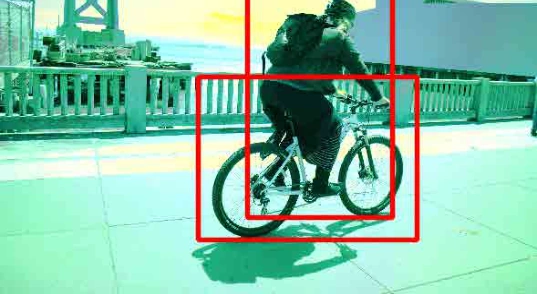
PASCALRAW
Nikon D3200
-
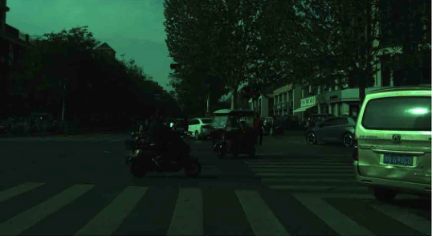
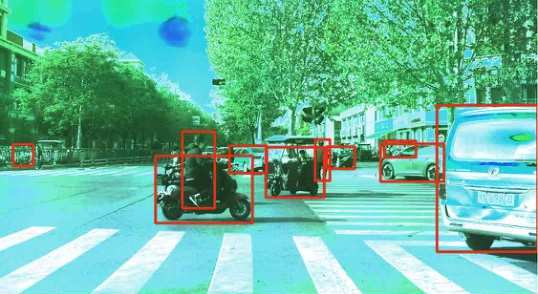
AODRaw
Sony α7 III
-
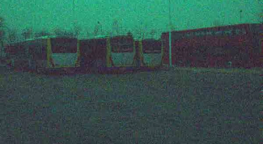
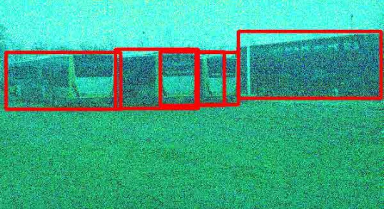
LOD
Canon 5D IV
-
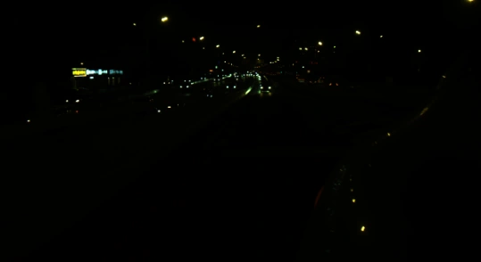
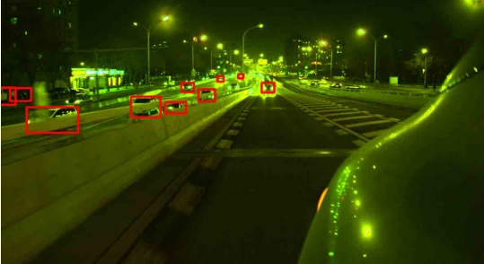
ROD
Sony IMX490
Four RAW benchmarks, four sensors, four very different pixel distributions (Figure 1 of the paper). Hover a card to see the scene rendered with its annotations. Experiments span sensors from 10 to 24 bits.
02The method
A global curve, then a local grid.
RAWild is a lightweight adapter in front of the detector backbone. Guided by the statistics of the RAW image itself, it predicts two physically meaningful operators — then hands the backbone an image it can read.
-
1Global Bézier curve
One monotone curve per channel, pinned to pure black and white, absorbs exposure, sensor non-linearity and per-channel sensitivity — color temperature, exposure and bit-depth shifts in a single smooth function.
-
2Local bilateral grid
A compact grid of 3×3 color matrices — (H/16)×(W/16) cells × 8 luminance bins — corrects mixed illumination, lens-shading falloff and crosstalk. Each pixel slices its own matrix by position and brightness.
-
3Histogram guidance
A differentiable 64-quantile descriptor per channel steers both predictions through AdaLN, so the same network adapts to bit depth, white-balance bias, exposure regime and dynamic range.
At initialization the whole adapter is exactly the identity; it then learns a bounded, well-conditioned residual — which is what lets a single network train jointly across heterogeneous sensors.
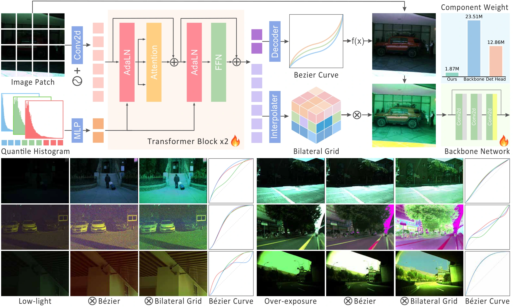
Inside the adapter
Follow one pixel through the curve and into the grid.
Global Bézier curveper channel · degree 7
Hover the image: each channel's value is mapped through its curve.
Bilateral grid8 luminance bins
Brightness picks the slice, position picks the cell.
ROD night-07357. The curves are the ones RAWild predicts for this frame; the linear input is shown without gamma. Grid slices are drawn schematically; the real grid has one cell per 16×16 pixels.
03Results
Two people, not one.
A low-light frame from PASCALRAW. Each baseline returns a single box around both pedestrians; RAWild separates them. Drag the divider, and switch the baseline.
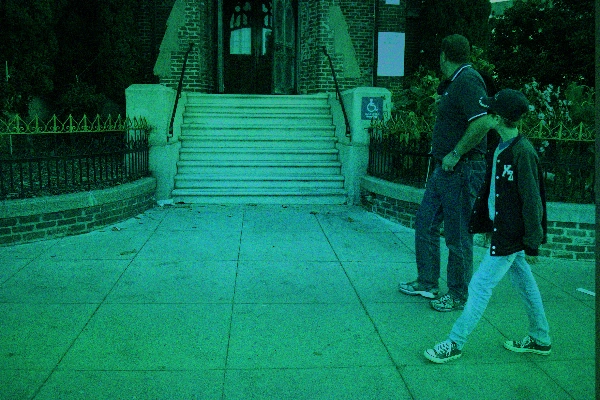
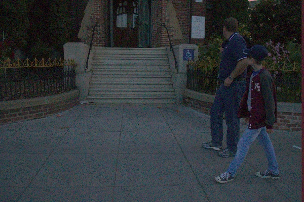
Real model predictions. RAW-Adapter and Dark-ISP are shown with their detections as rendered by the authors' visualization; Default ISP and RAWild boxes are drawn from the saved predictions (score ≥ 0.2).
Mixed-sensor detection
One network, every sensor.
Multi-RAW mixed-sensor benchmark
35.28mAP@50
+9.25over the strongest baseline
LOD · ResNet-50
64.0869.09+5.01
Dr.RAW → RAWild · mAP@50
ROD · ResNet-50
47.2055.41+8.21
Dr.RAW → RAWild · mAP@50
RAW ADE20K · segmentation
Best mIoU in all 9 settings · 3 exposures × MiT-B0/B3/B5
mAP@50 in percent. Multi-RAW from Table 2, LOD and ROD from Table 1 (ResNet-50, strongest baseline Dr.RAW), segmentation from Table 7 of the paper.
All numbers from the paperTables 1, 2, 3 and 7
04The paper
Read the research.
NeurIPS 2026
RAWild: Sensor-Agnostic RAW Object Detection via Physics-Guided Curve and Grid Modeling
The University of Tokyo · I2WM · RIKEN
Cite this work
@inproceedings{liu2026rawild,
title = {RAWild: Sensor-Agnostic RAW Object Detection via
Physics-Guided Curve and Grid Modeling},
author = {Liu, Shuhong and Chang, Gengjia and Liu, Jun and Chu, Xuangeng
and Zheng, Yinqiang and Harada, Tatsuya and Cui, Ziteng},
booktitle = {Advances in Neural Information Processing Systems (NeurIPS)},
year = {2026}
}